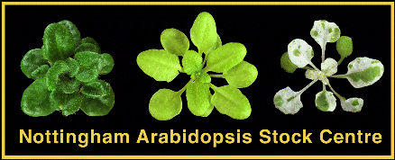

Nottingham Arabidopsis Stock Centre Update

Nottingham Arabidopsis Stock Centre
Dept Life Science
Nottingham University
Nottingham
NG7 2RD
UK
Tel +44 115 9791216
Fax +44 115 9513251
email arabidopsis@nottingham.ac.uk
WWW server URL= http://nasc.nott.ac.uk/
600 colour-images now on NASC's WWW server
The NASC World Wide Web Server now contains on-line access to high-quality colour-images of over 600 of NASC's Stock lines.Stocks with an associated image now include a small (thumbnail) picture in their description file. Clicking on the thumbnail links to a more-detailed image. In addition, all the images have been collected together in a "Picture Book." This can be browsed and provides links to the relevant Stock descriptions.
The incorporation of images into the NASC WWW server was carried out by David Flanders with funding from the UK Biotechnology and Biological Sciences Research Council (BBSRC).
95 Seed List
Work has started on this years Seed List which will be released in June. New lines for release will include Redei Lines currently distributed by the ABRC, Promoter trap lines from Patrick Gallois and chromosome pools of the Lister and Dean RI Lines for quick mapping analysis.Wisconsin Conference
NASC and ABRC will have a booth at the 6th International Arabidopsis Meeting in June. There will be computer demonstrations of all the Arabidopsis information available on the Internet. I hope to see many of you there.